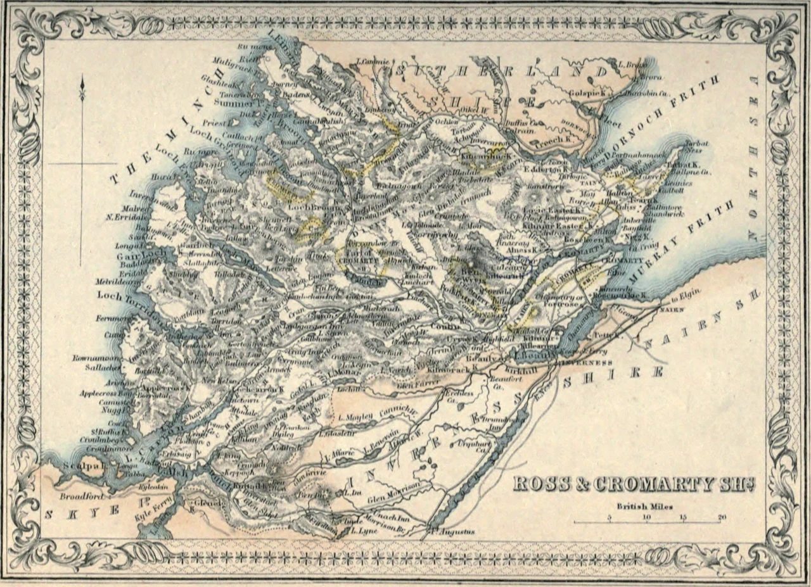
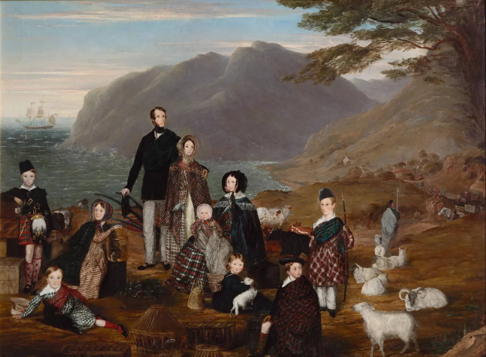
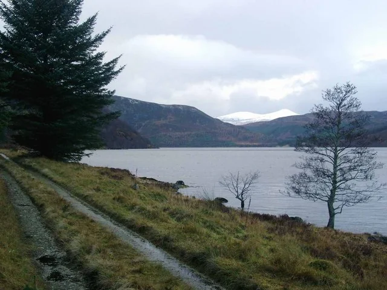

If you're exploring Invergordon and the beautiful glens of Easter Ross, you're walking through a landscape shaped by dramatic change. One of the most remarkable — and least known — chapters in that story happened right here, in 1792.
It began not with violence or famine, but with a wedding, a few drams of whisky, and an audacious plan to drive thousands of sheep out of the Highlands. This is the story of Bliadhna nan Caorach — the Year of the Sheep.

The Background: Sheep Farming Comes to Easter Ross
By the late 1700s, many landlords in Ross-shire were “improving” their estates. Traditional tenant farming — with its cattle, small plots and shared common grazings — was being swept away in favour of large-scale sheep farms. Sheep were far more profitable, especially for wool and mutton, and they required far fewer people to work the land.

In the upper glens around Alness and Strathrusdale, families who had lived on the same ground for generations suddenly found their cattle being impounded whenever the animals strayed onto the new sheep pastures — and they were charged to get them back. Tensions were rising fast.
The Spark: the Kildermorie Confrontation, May 1792
The breaking point came in May 1792, in the remote glen of Kildermorie. Sheep farmers — the Cameron brothers, incomers from Lochaber who leased the ground from Hector Munro of Novar — impounded cattle belonging to the Strathrusdale tenants.

This time the Strathrusdale men refused to accept it. They called for help from neighbouring Ardross and, led by the formidable Alexander “Big Wallace”, marched on Kildermorie. Outnumbered, the Camerons backed down and the cattle were freed. According to local tradition, in the struggle Wallace even twisted the barrels of one farmer's loaded gun “like a withy” — and carried off the foot-long dirk the man had drawn, an heirloom said to have been kept by Wallace's grandson long afterwards.
This small victory gave the tenants confidence. But something far bigger was coming.
The Wedding That Changed Everything — 27 July 1792
On Friday 27 July 1792, a large crowd gathered in Strathrusdale for the wedding of John Ross (known as Davidson) and Hellen Munro.
As the home-brewed ale and whisky flowed, the talk turned serious. The guests — many of them tenants facing eviction or the loss of their grazings — settled on something extraordinary: they would round up every sheep belonging to the new farms and drive the whole lot south, out of Ross-shire and Sutherland altogether.
Among the leading voices were Hugh Breck Mackenzie and John Aird, who urged the crowd on with fiery words about how future generations would curse anyone who failed to act. Over the following days, proclamations were read out at churches and public houses across the parishes — on Sunday 29 July at the kirk doors where there was a service, and at the inns where there was not — calling the people to muster.
The Great Sheep Drive — 31 July to 5 August 1792
On Tuesday 31 July, around 200 men gathered at Strath-Oykel. Within days their numbers had swelled to as many as 400.
They drove more than 6,000 sheep — several thousand more, by some accounts, once the Sutherland flocks were swept in — southward toward the Beauly area and the county boundary. They had even bought up all the gunpowder they could find in Tain and Dingwall. Tellingly, they deliberately spared the flock of Donald MacLeod of Geanies, the Sheriff of Ross — a sign of just how careful and considered this was.
Remarkably, the drovers did not slaughter or eat a single sheep. Though many were close to starving, they lived on their own meagre supplies, and the animals suffered nothing worse than the fatigue of the long journey. This was no spontaneous riot. It was a coordinated, multi-day operation drawing in people from many parishes — one of the most organised protests of the entire Highland Clearances.
“Though pressed with hunger, these conscientious peasants did not take a single animal for their own use.” — General David Stewart of Garth, who was present as a young soldier
The Military Response
Alarmed landowners met urgently in Tain, fearing open rebellion. They requested troops, and three companies of the 42nd Regiment — the Black Watch — were sent north from Fort George.
In the early hours of around 5–6 August, the soldiers closed in. Accounts differ on the detail: some describe a confrontation above Alness or at Boath, where a small party had been left guarding the herd overnight; others note that many of the drovers simply melted away into the glens of their own accord. A few were arrested — though a crowd later broke open Dingwall jail and freed their companions in the very face of the regiment.
General David Stewart of Garth, closely involved at the time, later wrote that there was “fortunately, no enemy,” and that turning their weapons against “their fathers, their brothers and their friends” would have been a duty painful in the extreme for the soldiers.
The Trials — and a Daring Escape
In September 1792, several of the ringleaders stood trial at the Circuit Court in Inverness, which opened on 12 September under Lord Stonefield. The sentences handed down were:
- Hugh Breck Mackenzie and John Aird — transportation for seven years
- Alexander Mackay and Donald Munro — banishment from Scotland for life
- Malcolm Ross — fined £50 and imprisoned for one month
- William Cunningham — imprisoned for three months
But the story wasn't over. On the night of 24 October 1792, Hugh Breck Mackenzie and John Aird escaped from the Inverness Tolbooth — together with a third prisoner, an unrelated man named Allan Macdonald who was being held on grounds of insanity, not for any part in the rising. As the tale is told, a nail was used to work loose a window bar, and the men slipped out when the jailer briefly left the door open, crossing the old wooden bridge into the night.
Contemporary descriptions even survive of what the two ringleaders looked like and what they were wearing. Both made it to safety in Morayshire — and were never recaptured.
Why It Still Matters
Bliadhna nan Caorach stands out because it was:
- Carefully organised and planned in advance
- Large in scale — hundreds of participants and thousands of sheep
- Cross-parish and even cross-county, uniting Ross and Sutherland
- Largely non-violent on the part of the protesters
It did not stop the Clearances. But it became a powerful symbol in Gaelic memory, and the name Bliadhna nan Caorach is still remembered in Easter Ross today. It shows the human side of a turbulent age — ordinary tenants making a bold, disciplined stand, using a wedding as their war council, and refusing to be passive victims of “improvement.”
When: Summer 1792 — the wedding on 27 July; the drive 31 July–5 August.
Where: Strathrusdale and Kildermorie, in the glens above Alness in Easter Ross.
What: Around 400 tenants drove 6,000+ sheep south in protest at the clearance of their townships for sheep farms.
The response: Three companies of the Black Watch were sent from Fort George; ringleaders were tried at Inverness — and two later escaped the Tolbooth, never to be recaptured.
Exploring the Story Today
Many of the places connected to this story are still visitable, or an easy drive from Invergordon:
- Strathrusdale and the upper Alness glens — atmospheric and quiet, perfect for imagining the wedding and the muster.
- Boath and the Kildermorie area — where the early confrontation took place and the great drive passed through.
- Tain & District Museum — excellent local displays, and it marks the anniversary of the events each year.
- The wider Easter Ross landscape — where the old tenant townships once stood.
If you're visiting Invergordon, you can pair this story with the town's famous naval heritage. The same glens that witnessed the Year of the Sheep later sent their men to the great fleets that anchored in the Cromarty Firth through two world wars — a story we tell in The Quiet Firth That Sank a Battleship.
This is one of those hidden gems of Highland history that deserves to be far better known. It's dramatic, it's deeply local, and it speaks to the resilience of the people who lived in these glens. If you've visited Strathrusdale or any of the Clearances sites in Easter Ross — or you'd like recommendations for routes, walks and other hidden-history stories, from the Invergordon Mutiny to the loss of HMS Natal — we'd love to hear from you. Do get in touch, or share this post with a fellow history lover.
Invergordon is your gateway to a landscape thick with stories like this one. See the full 2026 cruise schedule — ship names, arrival times, and ideas for your day ashore.
View the 2026 Cruise Schedule →